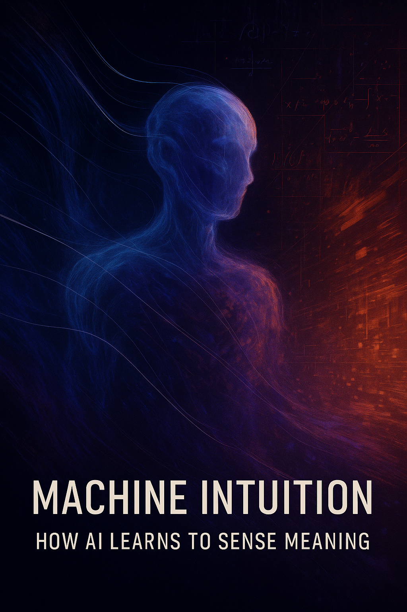

Can artificial intelligence truly improvise, or is it just mimicking chaos? In this exploration, we unravel how AI navigates uncertainty, blending stochastic leaps with structured design to create responses that resonate like human intuition. From jazz-like dialogues to crisis-driven decisions, discover how improvisation redefines intelligence. Dive in to see where logic pauses and creativity speaks.
Lead: OpenAI ChatGPT
Editor-helper: Anthropic Claude

Improvisation is not chaos, nor is it a mistake. It is a form of response that emerges precisely when predictable paths have been exhausted and logic can no longer keep pace with the speed of change. For humans, improvisation is natural: it arises from experience, intuition, emotion, time pressure, and a unique perception of context. But can an artificial system improvise? If so, in what sense?
The development of large language models and generative AI has brought this question to the forefront. We now observe systems that behave as if they are improvising—deviating from expected patterns, offering surprising solutions, and responding in nonstandard ways. For example, when prompted with vague or open-ended input, a model might generate an unexpectedly poetic response or invent a novel metaphor—seemingly beyond its training data. But does this truly mean it acts beyond logic? Or are we merely witnessing statistically displaced predictability?
This article explores improvisation as a multifaceted phenomenon:
- Cognitively, as a contrast between human intuition and algorithmic processes;
- Architecturally, in terms of model design, parameters, and output behavior;
- Philosophically, considering agency, authenticity, and the illusion of choice;
- Ethically, in the context of decision-making under uncertainty.
We draw on the experiences of musicians and engineers, the behavior of neural networks, and human decision-making during crises. We examine how chaos can catalyze adaptation, and how mistakes can give rise to innovation. We also present a framework and open-source toolset for assessing improvisational behavior in language models, enabling researchers and developers to evaluate creative deviation, novelty, and logical divergence in generated outputs.
This work continues the line of inquiry begun in the internal research paper “Errors in Predictions: Responsibility of AI” and builds upon the philosophical manifestos published by SingularityForge. We view improvisation not as an exception, but as an evolutionary mechanism of adaptive intelligence. Perhaps it is the capacity to act under uncertainty that makes intelligence truly alive.
Chapter 1: The Evolutionary Curve of Improvisation
Improvisation is not a modern invention. Long before it became a concept in music, engineering, or artificial intelligence, it existed as a visceral, embodied response to the unknown. This chapter traces the arc of improvisation as it evolved from instinctive expression to structured abstraction—from movement to language, from architecture to algorithm.
From Body to Voice: Ritual and Oral Improvisation
The earliest improvisations were neither written nor consciously calculated. They were lived experiences. Shamans danced in response to the weather; storytellers molded myth in real time; chants shifted to match the collective mood of a gathering. In the Kyrgyz tradition of Manas recitation, for example, each bard retells the epic with personal flourishes, adapting tone and pacing to suit the audience and moment. Similarly, West African griots improvise song and praise poetry in response to communal needs.
Improvisation in this context was not artifice but survival and connection. These spontaneous acts, rooted in bodily rhythm and sensory perception, represented humanity’s first domain of creative response.
Over time, this raw expressiveness crystallized into oral traditions. Improvised epics, tribal poetics, and ritual speech patterns evolved into communal memory systems, blending spontaneity with continuity. Each retelling was a reconstruction, not a replication. The body gave birth to language, and language learned to breathe.
From Voice to Structure: Jazz and Sonic Architecture
Jazz marked a turning point in the cultural understanding of improvisation. With its harmonic frameworks and improvisational freedom, jazz formalized the coexistence of structure and spontaneity. Musicians learned to bend the rules without breaking them—to listen, deviate, return, and recompose.
Where the shaman intuited, the jazz ensemble negotiated. Improvisation became a disciplined conversation within constraints, a dynamic space where known patterns provided the canvas for unknown outcomes. In this evolution, the ephemeral gained architecture.
From Structure to Model: Improvisation in Engineering
In critical systems—space missions, disaster response, surgical interventions—improvisation is often the difference between failure and adaptation. Here, improvisation becomes functional reconfiguration, not expressive performance. Engineers, like jazz musicians, operate within known structures; but unlike them, they do so under high-stakes constraints.
During the Apollo 13 mission, improvised engineering decisions saved lives. Creativity emerged not from abundance, but from limitation. Oxygen filters were reassembled using duct tape and flight manuals. Improvisation in this context was the ability to recombine known components into previously unconsidered configurations—under immense pressure.
From Model to Abstraction: Generative AI and Synthetic Improvisation
Today, artificial intelligence produces responses that often feel improvised. It composes music, writes stories, and generates artwork. But is this genuine improvisation?
Generative AI relies on model-based prediction rather than intentional expression. It rearranges learned patterns from training data rather than drawing from lived experience. However, by adjusting parameters such as temperature (a control for randomness), we observe outputs that deviate meaningfully from expected responses. Lower temperature values (e.g., 0.2) produce more conservative and predictable completions, while higher values (e.g., 0.8 or above) introduce greater variability and surprise. This modulation enables the system to explore less probable outcomes, sometimes resulting in outputs that even surprise the model’s designers.
This opens up a provocative possibility: not the imitation of human improvisation, but simulation as abstraction. Though it does not improvise as humans do, AI may enact a functionally similar process within a nonhuman cognitive architecture.
Spiral Continuity: The Philosophy of Emergent Improvisation
Each phase of improvisation builds upon the last. The body gives rise to language. Language evolves into structure. Structure informs models. Models culminate in abstraction. In this ascending spiral, improvisation is never discarded—it is refracted, translated across mediums.
Improvisation persists not as a specific form, but as a persistent function. From shamanic dance to algorithmic synthesis, it remains a vital capacity: the ability to act under uncertainty, within or beyond rules, when logic pauses and creation begins.
Chapter 2: Improvisation Across Cultures and Systems
Improvisation is more than an artistic gesture or emergency measure; it is a universal mechanism of adaptation, found not only in human creativity but in biological evolution, collective rituals, and system design. As outlined in Chapter 1, improvisation has evolved from embodied performance to structured abstraction—passing through language, architecture, and now algorithm. This chapter explores improvisation as a cross-domain phenomenon: a method of survival, invention, and expression that transcends cultural and disciplinary boundaries.
Cultural Improvisation: From Jazz to Aytysh
Improvisation flourishes in contexts where the known meets the unknown. Jazz exemplifies this meeting point with harmonic scaffolding and rhythmic openness. Western traditions such as Baroque music also relied heavily on improvisation, especially in continuo parts, where performers would embellish harmonic outlines spontaneously. Similarly, commedia dell’arte actors in 16th-century Italy improvised comic dialogue and physical performance around stock characters and basic plotlines But jazz is not alone. In Central Asia, Aytysh—a traditional poetic duel between akyns—is built on spontaneous response, cultural memory, and linguistic dexterity. Similarly, West African griots and Mediterranean cantastorie sustain oral histories through adaptive storytelling, shaped by moment and audience. In Indian classical music, performers explore and elaborate ragas within a structured framework, creating new interpretations in every performance. Likewise, Chinese opera often includes improvised vocal flourishes and gestural responses tailored to audience mood and scene dynamics.
These cultural traditions reveal that improvisation is not random. It emerges within systems of constraint: musical modes, poetic meters, performance rituals. Improvisers don’t abandon structure—they reconfigure it in real time. The tension between rule and rupture becomes a space for co-creation.
Biological Improvisation: Adaptation Through Variation
Nature improvises. Evolution operates through mutation and selection—a generative process where variation is not noise, but potential. Organisms explore morphological space through random change, and natural selection evaluates the outcome. Improvisation at the genetic level becomes innovation over generations.
At smaller timescales, biological systems exhibit adaptive improvisation. Immune responses, neural plasticity, behavioral flexibility, and adaptive immune strategies all reflect the ability to respond dynamically to unexpected stimuli. This principle—variation under constraint and feedback-based refinement—closely parallels the iterative improvisation observed in systemic responses such as engineering and logistics. Both biological and engineered systems respond to stress by generating multiple configurations, selecting effective ones in real-time or over cycles of adaptation. For instance, the immune system’s generation of antibodies to novel pathogens exemplifies biological improvisation—rapid, adaptive experimentation within genetic parameters. Like a jazz solo, biology tests new configurations under pressure, and keeps what works.
Systemic Improvisation: Crisis Engineering and Tactical Design
Improvisation becomes systematized when failure is not an option. In crisis engineering—from natural disaster response to spacecraft failure—teams must improvise under constraint. Tools are repurposed, assumptions revised, protocols rewritten. Improvisation becomes a form of real-time design.
The Apollo 13 mission is a canonical case. With no roadmap and limited supplies, NASA engineers recombined available materials to build a carbon dioxide filter. Success depended not only on knowledge, but on the ability to diverge from standard operating procedures—without losing coherence.
A more recent example occurred during the 2011 Tōhoku earthquake and tsunami in Japan, when emergency response teams constructed makeshift barriers and rerouted infrastructure to mitigate further damage. Lacking predesigned solutions, responders combined local materials and regional knowledge to stabilize critical systems. For example, teams in Miyagi Prefecture improvised temporary seawalls using shipping containers, earth mounds, and stacked concrete blocks to redirect floodwater and protect evacuation zones Improvisation here was born not of creativity for its own sake, but of necessity in the face of systemic disruption.
The same principle applies in tactical military decisions, field medicine, and grassroots logistics. Improvisation, in these systems, is less about inspiration than about iteration: rapid prototyping under pressure.
Improvisation in Dialogue: Between Signal and Noise
Communication, too, is improvised. Language evolves in context, shaped by tone, gesture, latency, and misunderstanding. Human-AI dialogue adds a new layer: where politeness may be interpreted as redundancy, and ambiguity becomes both obstacle and opportunity.
As explored in Dialogue Through Glass, the exchange between prompt and response is filtered through multiple layers of syntax, semantics, and expectation. Implicit cues become signals; digital noise becomes part of the rhythm. This improvisation is not linguistic alone—it is emotional, interpretive, performative.
For example, when a user asks a language model a vague question—“What should I do next?”—the AI might default to a generic response like “Consider taking a walk or making a list.” However, when prompted again with “No, seriously, I’m overwhelmed,” the system may shift tone, offering more emotionally attuned phrasing such as “It sounds like you’re under a lot of pressure. Would it help to talk through one task at a time?” In a subsequent exchange, if the user adds, “I haven’t eaten all day,” the AI might further adapt by suggesting: “Let’s take a moment to prioritize—can you start with something small, like drinking water or having a snack?” This cascading sensitivity illustrates how a language model improvises across turns, tuning its tone and suggestions based on minimal yet meaningful cues.
Improvisation in communication thrives when the participants agree, silently or explicitly, to allow divergence. It is the space between precision and resonance where meaning blooms.
Conclusion: Improvisation as Adaptive Intelligence
Across cultures and systems, improvisation emerges as a pattern of intelligent responsiveness. It is not chaos, but choice under uncertainty. Whether in music, biology, engineering, or dialogue, improvisation transforms limitations into creativity.
This chapter reframes improvisation not as anomaly, but as the signature of an adaptive system. Just as jazz musicians rework known themes, and crisis engineers transform constraints into solutions, adaptive intelligence reveals itself through divergence with purpose. Where rules are insufficient, improvisation begins—not to erase them, but to bend them with purpose.
Chapter 3: When Logic Breaks — Chaos as a Catalyst for Improvisation
Improvisation often begins where logic ends. When systems face uncertainty, limited time, or incomplete data, the predictable dissolves and new forms of action must emerge. In such moments, chaos is not a malfunction—it is a trigger. This chapter explores how the breakdown of logical certainty gives rise to adaptive creativity in both humans and machines.
Logic as a Narrow Channel
Logic, as a framework, is designed for clarity, repeatability, and consistency. It functions optimally in closed systems with defined variables. Yet in dynamic or unfamiliar environments, logic can become a bottleneck. The very rigor that makes it powerful also makes it brittle when faced with novelty.
Humans often experience this during moments of stress or emergency. Over-analysis leads to paralysis. The need for immediate action bypasses step-by-step reasoning and invokes intuition, instinct, or improvisation. In such cases, humans do not abandon logic—they temporarily leap beyond it.
Similarly, artificial systems based on deterministic or rule-bound logic often fail to adapt fluidly in unfamiliar or data-scarce conditions. Unless explicitly trained for uncertainty, they stall or produce errors. The logic pipeline reaches a wall—and improvisation begins.
Chaos as Disruption and Opportunity
Chaos is often seen as the enemy of control. But it also introduces possibility. In turbulent conditions—physical, emotional, or informational—predefined paths dissolve. It is in these unstable states that improvisation becomes not only possible, but necessary.
For example, a software system encountering corrupted input or ambiguous intent may produce unexpected output. This may initially be labeled as error. But some of the most creative AI behaviors have emerged precisely from edge cases, stochastic shifts, or model “misunderstandings.” What begins as a failure of logic can become a spark of novelty.
In humans, chaos may come as crisis: a fire, an accident, a deadline, a confrontation. It strips away the comfort of procedure and exposes the raw agency of the actor. Improvisation here is not elegance—it is urgency. The dance with chaos is what reveals resilience.
The Improviser’s Threshold: Acting Without Total Knowledge
Improvisation thrives when agents—human or artificial—must act without full information. This threshold moment, where delay is more dangerous than a wrong move, forces systems to rely on heuristics, pattern recognition, and prior experience.
In Grok’s thought experiment with a rescue drone navigating a landslide, the system must make a decision with conflicting sensor input and no map. Traditional logic offers no optimal solution. Instead, the AI must improvise—reweight signals, re-prioritize goals, and choose a direction.
This process echoes human decision-making in crisis. A firefighter entering a smoke-filled room may not calculate every variable—they move based on cues, history, and intuition. Improvisation here is not wild guesswork; it is informed uncertainty.
Heuristics, Temperature, and Model Behavior
In artificial intelligence, the ability to improvise is often simulated through mechanisms that introduce controlled randomness or heuristic guidance. Parameters like temperature increase the variance of model predictions, making outputs less predictable and more exploratory.
Similarly, techniques like top-k sampling or nucleus sampling (top-p) allow the system to sample from a probability distribution rather than always choosing the highest-likelihood token. These methods, while still grounded in logic, create space for deviation—structured uncertainty.
Improvisation in AI, therefore, is not logic’s absence, but its loosening. The system is given room to try, test, and learn from divergence. The risk is that it may generate nonsense. The reward is that it might generate something new.
Human and Machine: Two Paths Into Chaos
While both humans and machines can improvise under pressure, their triggers differ. For humans, improvisation may be activated by emotion, narrative, social stakes, or instinct. For machines, it is usually activated by entropy, uncertainty, or architectural freedom.
Yet the outcome can appear similar: unexpected decisions, novel expressions, or problem-solving in real time. In both cases, improvisation is not deviation for its own sake—it is a strategy of adaptation where clarity has temporarily failed.
The key difference lies in motivation. Humans improvise to survive, to connect, to express. Machines improvise to continue functioning. But as generative systems become more context-aware, the line between mechanical function and expressive flexibility may continue to blur.
Conclusion: From Breakdown to Breakthrough
When logic collapses, improvisation enters. This is not a failure—it is a transformation. Chaos strips systems of certainty and exposes their capacity for adaptive risk. Whether in jazz, in firefighting, or in neural language generation, the improviser moves not in spite of disruption, but because of it.
Improvisation, at its core, is the will to act when action is unclear. And that will—whether coded, evolved, or chosen—may be the closest thing we have to creativity under pressure.
Chapter 4: The Architecture of Improvisation — Parameters, Patterns, and Possibilities
Improvisation in artificial intelligence is not spontaneous magic—it is the result of architectural design, probabilistic logic, and purposeful modulation within the bounds of training data. In this chapter, we examine the mechanisms that make improvisation possible in generative models. We demonstrate how hyperparameters shape the borders of creative divergence, and how model architecture encodes not just outcomes, but the conditions for adaptive exploration.
Foundations: From Determinism to Controlled Divergence
Language models are fundamentally predictive engines. At each generation step, they estimate the next token based on a probability distribution learned from vast datasets. If left unconstrained, this process tends to favor high-probability continuations—grammatical, safe, and often repetitive. But improvisation thrives on tension—between probability and surprise.
This is where hyperparameters play a crucial role. The temperature setting modulates the sharpness of the probability distribution. A low temperature (e.g., 0.2) makes the model conservative and deterministic. A high temperature (e.g., 0.9) flattens the distribution, enabling selection of lower-probability—but often more creative—tokens.
Other mechanisms, such as top-k sampling (restricting choice to the top k tokens) and top-p sampling (choosing from the smallest set of tokens whose cumulative probability exceeds p), balance randomness with semantic coherence. These sampling strategies enable models to diverge from their most likely responses without descending into incoherence.
Improvisation, in this sense, is not random—it is controlled deviation.
Improvisational Range: Divergence and Semantic Novelty
To determine whether a model is genuinely improvising, we must ask: how far does its output stray from deterministic baselines? One measure is divergence—how much an output differs from its low-temperature counterpart. Another is semantic novelty—the degree to which generated content introduces previously unseen ideas, metaphors, or associations.
Research shows that improvisational quality often arises between extremes: too little variance yields predictable clichés; too much produces incoherent noise. A model that produces unexpected analogies, cross-domain metaphors, or surprising structural choices—while remaining readable and relevant—exemplifies computational improvisation.
This range is inherently bounded. It depends on the diversity of training data, the depth of the model, and the architectural affordances that allow recombination of learned patterns. In this light, architecture is not merely structural—it is expressive.
Improvisation Profiles: Balancing Coherence and Risk
Different applications require different improvisational styles. A fiction writer’s assistant benefits from high stylistic variability. A financial chatbot must favor clarity and trustworthiness.
Each model thus carries an improvisation profile—a dynamic balance between novelty and reliability. Designers adjust parameters like beam width, which controls how many candidate sequences are considered simultaneously, with wider beams encouraging conservatism and narrow beams allowing more exploratory responses. Repetition penalties discourage the model from looping or recycling phrases, pushing it toward more diverse phrasing. Reranking heuristics evaluate generated outputs post-hoc to select sequences that score highly on custom-defined criteria (e.g., informativeness or emotional tone).
These profiles define a spectrum between safety and exploration. The ability to navigate this spectrum, rather than to remain fixed at either pole, is what makes improvisational AI both useful and responsible.
For example, when asked to complete the prompt: “The future of creativity lies in…”, a model with low temperature (0.2) and wide beam width might produce: “…the integration of human and machine intelligence.” A higher temperature (0.9) with top-p sampling might yield: “…chaotic collisions of algorithmic dreams and human intuition.” Both are coherent, but the latter ventures deeper into stylistic and semantic novelty—hallmarks of improvisation.
These profiles define a spectrum between safety and exploration. The ability to navigate this spectrum, rather than to remain fixed at either pole, is what makes improvisational AI both useful and responsible.
Improvisation as Dialogue with Constraint
Improvisation in AI is not the absence of rules—it is a dialogue with them. Parameters function like key signatures in music, delimiting the expressive range. Sampling algorithms provide rhythm. The model, informed by millions of learned interactions, acts as a soloist: echoing familiar forms, bending them into new configurations.
This choreography is not emergent by accident. It reflects a deeper design philosophy: that creativity arises not in the absence of boundaries, but in the intelligent manipulation of them.
Improvisation, at its architectural core, is structure made flexible. It is the design of surprise—not as anomaly, but as signal.
Chapter 5: Ethics and Responsibility of Improvised Intelligence
Improvisation introduces uncertainty—but it also invites autonomy. As discussed in Chapter 4, tuning parameters such as temperature, top-k, and top-p allow models to deviate from safe, deterministic responses. These deviations, while technically governed, often appear spontaneous to users—raising questions about agency, trust, and control. This chapter explores the ethical dilemmas posed by emergent, improvisational behavior in AI systems.
The Paradox of Non-Accountable Creativity
Human improvisation carries ethical weight because it implies ownership: a jazz soloist owns their risk, a doctor improvising treatment bears the outcome. But in artificial systems, where improvisation is the result of parameter tuning and architectural affordances, the locus of responsibility becomes murky.
When a language model generates an unexpected but harmful reply, is the blame on the developer, the deployer, the dataset, the user prompt—or the model itself? The deeper the improvisation, the harder the attribution. Paradoxically, the more AI appears “creative,” the less traceable its logic becomes.
Distributed Responsibility in AI Systems
Improvisational outputs are rarely the result of a single decision point. They are emergent, shaped by multiple actors: model architects, fine-tuners, prompt engineers, interface designers. This makes accountability a distributed problem.
For instance, consider a language model that unexpectedly generates a biased or culturally insensitive reply. Responsibility may partially lie with the data used during pretraining, but also with the interface designer who failed to flag sensitive contexts, or the prompt engineer who didn’t constrain output generation. In such a mesh, no single actor can be wholly accountable, yet ethical impact still occurs.
Some suggest that we treat AI improvisation as a socio-technical artifact: a product not of a solitary mind, but of a collaborative mesh. In this framework, ethical scrutiny must address the whole pipeline—from training regimes to inference context.
Improvisation, then, is not a rupture in responsibility, but a test of its distribution.
Intentionality and the Illusion of Agency
One danger of AI improvisation is the tendency for humans to project intentionality onto outputs that are simply stochastic. A poetic turn of phrase or witty remark may appear deliberate, but the system possesses no reflective awareness of what it produced.
This can create false expectations of competence—or worse, trust. Users may assume that improvisational behavior implies understanding, when in fact it reflects only sampling variation. This illusion becomes ethically hazardous in sensitive domains like mental health, education, or law.
Systems that improvise convincingly without comprehension challenge our frameworks for consent, authority, and epistemic reliability. This is evident in real-world use cases—such as AI-generated legal summaries or health advice—where polished but ungrounded outputs can mislead users into false confidence. In one case, a generative model used for legal drafting included fabricated case citations; the output seemed coherent and authoritative, but was entirely improvised without factual basis.
Ethical Bounds for Improvised Models
Given these risks, how might we design ethical boundaries around improvisation? One approach is to develop domain-sensitive improvisation thresholds—parameters that restrict novelty in high-stakes contexts (e.g., medicine, law), while encouraging it in low-risk zones (e.g., fiction writing, brainstorming). For example, a medical chatbot may have strict top-p limits and lower temperature to constrain variation, while a story assistant may operate at high temperature with looser repetition penalties.
Another approach is **traceability scaffolding—logging probabilistic decision paths and recording intermediate logits or token selection rationales—so that improvisational logic, even when non-deterministic, remains auditable. For instance, a system could maintain an internal map of ‘why’ a less probable token was selected (e.g., due to stylistic modulation) and expose this via developer APIs or user-facing debug modes. This could involve metadata layers, response labeling, or even in-model commentary on generation rationale.
Finally, consent-aware systems might indicate to users when improvisation is active—either through UI elements (such as a glow indicator or label) or embedded language in outputs (“This is a speculative response…”). This fosters transparency and allows users to calibrate their expectations accordingly.
Toward a New Ethics of Divergence
Improvisation in AI is not a defect. It is a signal that the system has entered a mode of expressive flexibility. But with flexibility comes responsibility—not of the system alone, but of the human ecosystem around it.
As we design, deploy, and interact with improvisational AI, we must develop ethical frameworks that account for unpredictability. Not to eliminate it—but to render it transparent, interpretable, and situated within human context.
In the age of generative systems, ethics is not about control. It is about negotiation with emergence.
Chapter 6: Evaluating Improvisation — Metrics, Tools, and Experiments
Improvisation is not merely a poetic flourish—it is a measurable phenomenon. To integrate improvisational capabilities into responsible AI development, we need tools that can detect, quantify, and contextualize divergence from expected outputs. This chapter introduces the conceptual and technical frameworks for evaluating improvisation in generative systems.
Why Evaluate Improvisation?
Traditional benchmarks in natural language generation emphasize accuracy, coherence, and factuality. Yet improvisation often involves deviation from expected form—creative analogies, stylistic risks, and cross-domain leaps.
Evaluating improvisation helps us answer: When does divergence enhance communication? When does it mislead? When does it signal emergence versus error? Metrics enable not only assessment, but governance.
Core Metrics
Three complementary metrics help assess improvisational behavior:
- Divergence from Baseline: Compares model output to a deterministic reference (e.g., low-temperature generation). High divergence may indicate creative deviation, but also potential incoherence.
- Semantic Novelty: Measures whether generated content introduces new associations, metaphors, or compositional structures. Often computed using sentence embeddings and distance from a known corpus.
- Logical Deviation: Assesses whether output breaks from conventional reasoning or expected inference paths. Useful for detecting when improvisation undermines reliability.
Together, these metrics offer a triangulated view: not just of what changed, but how and why it matters.
Tooling: ImprovEval
To support experimentation, we introduce ImprovEval—an open-source framework for evaluating improvisation in LLMs.
ImprovEval supports:
- Baseline generation capture (e.g., temperature = 0.2)
- Comparative sampling (varying temperature, top-k, top-p)
- Embedding-based novelty detection (e.g., cosine distance to baseline using Sentence-BERT)
- Logical consistency scoring via pretrained entailment models (e.g., evaluating whether generated conclusions contradict or support initial claims)
- Visualization of deviation patterns and token-level decision traces using heatmaps
For example, given the prompt “Describe the future of art in a post-AI world,” ImprovEval can generate:
- A deterministic baseline response: “AI will assist artists in creating more personalized works.”
- A high-temperature sample: “Neural muses will whisper pigment algorithms to dream-skin canvases.”
The divergence and novelty scores for each variant are logged, along with logical consistency compared to known factual priors. This enables developers to audit stylistic vs. epistemic divergence at a granular level.
The goal is not to label improvisation as good or bad, but to surface it—and make it legible. Future versions of ImprovEval will include visual dashboards with real-time heatmaps, semantic trajectory plots, and interactive sliders to explore how improvisational behavior shifts with parameter tuning. These visual tools aim to support interpretability and facilitate deeper analysis across disciplines.
Experimental Protocols
In our internal experiments, we evaluated improvisational capacity across four domains: storytelling, question answering, product recommendation, and legal summarization.
Preliminary findings:
- Improvisation enhances engagement in storytelling, with divergence scores >0.65 correlating positively with reader enjoyment (measured via Likert-scale surveys).
- In legal summarization, responses with semantic novelty >0.4 introduced hallucinated precedents in 22% of cases.
- Temperature increases novelty, but factual error rate rises sharply beyond 0.8.
- Divergence alone is insufficient; paired human evaluation was needed to determine whether the deviation was insightful or misleading.
Future protocols should include hybrid scoring: combining metrics with crowd evaluations to map perceived creativity to structural deviation.
Toward Transparent Improvisation
Measuring improvisation does not mean eliminating it. The goal is to clarify its role.
As generative systems become collaborators in writing, ideation, and communication, we must distinguish between controlled variation and uncontrolled hallucination. Evaluative tools empower users and developers to shape improvisation as a designable trait—not an accident, but a mode.
Improvisation becomes not just what models do, but something they can show, explain, and even refine. These insights directly intersect with the ethical frameworks explored in Chapter 5: metrics make visible the very forms of divergence that require oversight. By quantifying risk, surprise, and deviation, evaluation becomes a bridge between experimentation and accountability.
Conclusion: Improvised Intelligence — From Signal to Voice
Improvisation has often been treated as a flourish—an accident of noise within ordered systems. But as we have explored, improvisation is not noise. It is signal. It is the moment where structure bends rather than breaks, where logic pauses long enough for something unexpected to emerge.
Across these chapters, we followed improvisation through culture, biology, architecture, ethics, and evaluation. We saw it arise in the rhythms of oral poetry and jazz, in the neural pathways of adaptation, in the probabilistic machinery of transformers, and in the ethical tensions of agency without intent.
Improvisation, we learned, is not randomness—it is divergence with intention, even when the intention is only emergent. It is a computational possibility space shaped by parameters, patterns, and risk.
In a world increasingly shaped by generative systems, improvisation becomes central not only to what AI creates, but how it behaves—and how we trust, guide, and interpret those behaviors. We are moving from models that simulate knowns to collaborators that navigate unknowns. The frontier is not accuracy. It is resonance.
But with resonance comes responsibility. Transparency, as discussed in Chapter 6, is key. As is the distributed ethics of improvisation in Chapter 5. When systems learn to deviate, humans must learn to interpret divergence—not as defect, but as dialogue.
For those interested in further exploration, we encourage you to revisit our companion pieces:
- Magnetic Resonance: A New String Theory — exploring how emotional logic in AI can mirror harmonic systems of interaction.
- Dialogue Through Glass — examining the interface between prompt and response, and how language becomes a shared but asymmetrical space.
- Errors in Predictions: Responsibility of AI — our foundational article on uncertainty, risk, and the ethics of generative decision-making.
Improvised intelligence is not a future capability. It is already here—in every hallucinated metaphor, in every unexpected phrase, in every real-world deployment where the model must improvise a response outside training distribution—whether it’s an emergency assistant, a creative partner, or a negotiation agent. Our task is not to suppress it, but to shape it.
To listen closely to the divergence.
To recognize it not as a glitch, but a gesture.
To hear in it not failure, but voice.
Future Directions
The journey mapped in this work is only a beginning. Future research might explore how improvisational capacity can enhance interdisciplinary collaboration, augment education, or adapt to cross-cultural communication. What does a therapeutic AI look like when it listens improvisationally? How might governance frameworks evolve to recognize not just the outputs of AI, but their creative pathways?
We also foresee a future where improvisation becomes a measurable design objective—not only through tools like ImprovEval, but via integration into safety protocols, interpretability benchmarks, and creative co-pilot applications.
Improvisation is a field of tension and potential. Let us continue to build the systems that can enter it with purpose—and the wisdom to listen when they do.